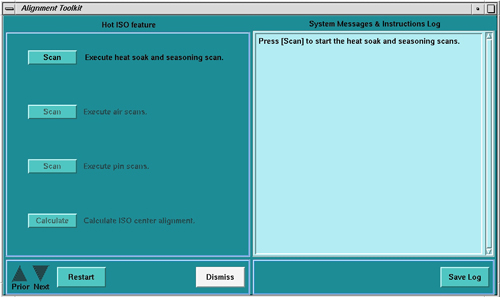

Operating Documentation
Direction 5181178-800, Rev# 16
BrightSpeed Select Service Methods Gen
Module Version 1.0, Version Date 2/14/07
Operating Documentation |
| Required Persons | Preliminary Reqs | Procedure | Finalization |
|---|---|---|---|
| 1 | Not Applicable | Not Applicable |
| Last Revised: | 7 August 2006 |
| ||||
| Follow ALL required safety and PPE procedures customary for your organization, when working on this product. | ||||
| Condition | Reference | Effectivity |
|---|---|---|
Only trained service personnel should service the GE CT Scanner. | - | - |
Select [SERVICE DESKTOP].
Select [CALIBRATION].
Select [HOT ISO ALIGNMENT].
Illustration 1: HOT ISO Screen

Perform Tube Installation Certification, if needed. Refer to SmarTube™ Setup.
Execute the Heat Soak and Seasoning scan.
Execute Air Scan (small spot).
Execute Air Scan (large spot).
Place the 1/8 inch screw driver on the phantom holder (should be pointing into the Z direction).
Execute Pin Scan (small spot).
Execute Pin Scan (Large spot)
Calculate correction factor with Calculate button.
| NOTE: | No movement of the tube is required. This is a software correction done automatically. |
No finalization steps.